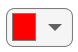
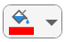
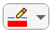
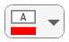

uicolorpicker
Description
c = uicolorpickerColorPicker object. MATLAB® calls the uifigure function to create the
figure.
c = uicolorpicker(parent)Figure object or one of its child containers.
c = uicolorpicker(___,Name=Value)ColorPicker properties using one or more name-value arguments.
Use this option with any of the input argument combinations in the previous syntaxes. For
example, uicolorpicker(Value="yellow") creates a color picker with an
initial color value of yellow. For a list of properties, see ColorPicker.
Examples
Create a color picker in a UI figure.
fig = uifigure; c = uicolorpicker(fig);

The color picker allows an app user to choose from a set of standard colors or to select a custom color from a gradient.

Create a color picker in a UI figure and specify the initial color.
fig = uifigure;
c = uicolorpicker(fig,Value="blue");
Determine the location and size of the collapsed color picker by querying the Position property. The first two elements of the position vector specify the horizontal and vertical distance from the bottom-left corner of the figure, and the last two elements specify the color picker width and height.
pos = c.Position
pos = 1×4
100 100 38 22
Increase the size of the color picker by changing the last two elements of the position vector.
c.Position(3:4) = [100 30];

Create an app that changes the color of a plotted line when a user selects a color from a color picker.
In a file named choosePlotColor.m, write a function that implements the app:
Create a UI figure and grid layout manager to lay out the app.
Create UI axes, a label, and a color picker in the grid layout manager.
Write a callback function named
updateColorthat changes the plot color based on the color picker selection, and assign the function to theValueChangedFcncallback property of the color picker. For more information about callbacks, see Create Callbacks for Apps Created Programmatically.
function choosePlotColor fig = uifigure; g = uigridlayout(fig); g.RowHeight = {'1x','fit'}; g.ColumnWidth = {'1x','fit','fit','1x'}; ax = uiaxes(g); ax.Layout.Row = 1; ax.Layout.Column = [1 4]; x = linspace(-2*pi,2*pi); y = sin(x); p = plot(ax,x,y); lbl = uilabel(g,Text="Plot color:"); lbl.Layout.Row = 2; lbl.Layout.Column = 2; c = uicolorpicker(g, ... Value=p.Color, ... ValueChangedFcn=@(src,event) updateColor(src,event,p)); c.Layout.Row = 2; c.Layout.Column = 3; end function updateColor(src,event,p) val = event.Value; p.Color = val; end
Run the choosePlotColor function. Select a color from the color picker to update the plot.

Input Arguments
Name-Value Arguments
Specify optional pairs of arguments as
Name1=Value1,...,NameN=ValueN, where Name is
the argument name and Value is the corresponding value.
Name-value arguments must appear after other arguments, but the order of the
pairs does not matter.
Example: uicolorpicker(fig,Value="black") creates a color picker with
an initial color value of black.
Note
The properties listed here are a subset of the available properties. For the full
list, see ColorPicker.
Selected color, specified as an RGB triplet, a hexadecimal color code, a color name, or a short name, and returned as an RGB triplet.
RGB triplets and hexadecimal color codes are useful for specifying custom colors.
An RGB triplet is a three-element row vector whose elements specify the intensities of the red, green, and blue components of the color. The intensities must be in the range
[0,1]; for example,[0.4 0.6 0.7].A hexadecimal color code is a character vector or a string scalar that starts with a hash symbol (
#) followed by three or six hexadecimal digits, which can range from0toF. The values are not case sensitive. Thus, the color codes"#FF8800","#ff8800","#F80", and"#f80"are equivalent.
Alternatively, you can specify some common colors by name. This table lists the named color options, the equivalent RGB triplets, and hexadecimal color codes.
| Color Name | Short Name | RGB Triplet | Hexadecimal Color Code | Appearance |
|---|---|---|---|---|
"red" | "r" | [1 0 0] | "#FF0000" |
|
"green" | "g" | [0 1 0] | "#00FF00" |
|
"blue" | "b" | [0 0 1] | "#0000FF" |
|
"cyan"
| "c" | [0 1 1] | "#00FFFF" |
|
"magenta" | "m" | [1 0 1] | "#FF00FF" |
|
"yellow" | "y" | [1 1 0] | "#FFFF00" |
|
"black" | "k" | [0 0 0] | "#000000" |
|
"white" | "w" | [1 1 1] | "#FFFFFF" |
|
This table lists the default color palettes for plots in the light and dark themes.
| Palette | Palette Colors |
|---|---|
Before R2025a: Most plots use these colors by default. |
|
|
|
You can get the RGB triplets and hexadecimal color codes for these palettes using the orderedcolors and rgb2hex functions. For example, get the RGB triplets for the "gem" palette and convert them to hexadecimal color codes.
RGB = orderedcolors("gem");
H = rgb2hex(RGB);Before R2023b: Get the RGB triplets using RGB =
get(groot,"FactoryAxesColorOrder").
Before R2024a: Get the hexadecimal color codes using H =
compose("#%02X%02X%02X",round(RGB*255)).
Predefined or custom icon, specified as a string scalar, character vector, or
m-by-n-by-3 truecolor image array.
Predefined Icon
This table lists the values to specify a predefined icon. Predefined icons appear above a swatch of the currently selected color.
| Value | Appearance |
|---|---|
'' (default) |
 |
'fill' |

|
'line' |

|
'text' |

|
Custom Icon
Specify a custom icon as one of these values:
A string scalar or character vector that specifies the filename of an SVG, JPEG, GIF, or PNG image that is on the MATLAB path. Alternatively, you can specify a full path to the image file.
An
m-by-n-by-3 truecolor image array. See Working with Image Types in MATLAB for more information.
If you plan to share an app with others, add the file image to the MATLAB path to facilitate app packaging.
Value changed callback, specified as one of these values:
A function handle.
A cell array in which the first element is a function handle. Subsequent elements in the cell array are the arguments to pass to the callback function.
A character vector containing a valid MATLAB expression (not recommended). MATLAB evaluates this expression in the base workspace.
The ValueChangedFcn callback executes when the user selects a new
color using the color picker.
This callback function can access specific information about the user’s interaction
with the color picker. MATLAB passes this information in a ValueChangedData object as the second argument to your callback function.
In App Designer, the argument is named event. You can get the object
properties using dot notation. For example, event.PreviousValue gets
the previously selected color. The ValueChangedData
object is not available to callback functions specified as character vectors.
This table lists the properties of the ValueChangedData object.
| Property | Value |
|---|---|
Value | New selected color |
PreviousValue | Previously selected color |
Source | Component that executes the callback |
EventName | 'ValueChanged' |
The ValueChangedFcn callback does not execute when the user
re-selects the currently selected color. The callback also does not execute when the
Value property changes programmatically.
For more information about callbacks, see Create Callbacks for Apps Created Programmatically.
Location and size of the collapsed color picker relative to the parent container,
specified as a vector of the form [left bottom width height]. This
table describes each element in the vector.
| Element | Description |
|---|---|
left | Distance from the inner left edge of the parent container to the outer left edge of the color picker |
bottom | Distance from the inner bottom edge of the parent container to the outer bottom edge of the color picker |
width | Distance between the right and left outer edges of the color picker |
height | Distance between the top and bottom outer edges of the color picker |
All measurements are in pixel units.
Alternative Functionality
The uicolorpicker function creates a color picker that is embedded in
an app. To launch a color picker dialog box outside of an app, such as from a script or
function, use the uisetcolor function instead.
Version History
Introduced in R2024a